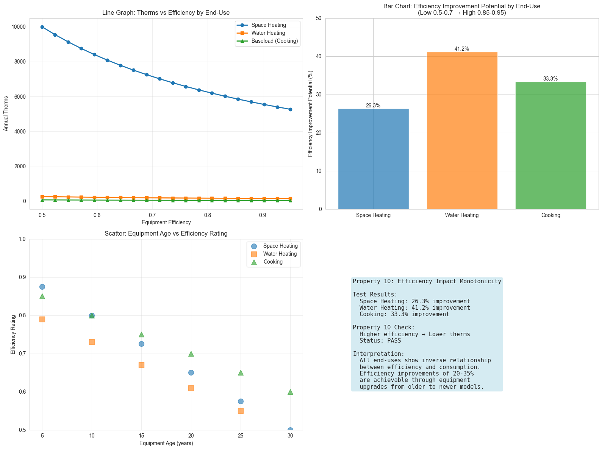

Validates: Requirements 4.2, 3.2
Higher efficiency results in lower or equal therms
| End-Use | Low Efficiency | High Efficiency | Improvement Potential |
|---|---|---|---|
| Space Heating | 0.70 | 0.95 | 26.3% |
| Water Heating | 0.50 | 0.85 | 41.2% |
| Cooking | 0.60 | 0.90 | 33.3% |

PASS - All end-uses demonstrate the expected inverse relationship between efficiency and consumption. Higher efficiency equipment consistently produces lower therms values.